收录于合集
作品简介
【作者】 Justin Grimmer，斯坦福大学政治学系教授。主要研究兴趣是美国国会、选举、社交媒体和数据科学等。
【编译】 兰星辰（国政学人编译员，北京大学）
【审校】 虞敷扬、李雯珲
【排版】 贺奕
【来源】 Grimmer, J., & Stewart, B. M. (2013). Text as Data: The Promise and Pitfalls of Automatic Content Analysis Methods for Political Texts. Political Analysis, 21 (3), 267–297. Cambridge University Press.

期刊简介
《政治分析》（Political Analysis）发表在政治学研究方法（包括定量和定性方法）领域具有原创性并有重大进展的论文。它是美国政治学协会政治方法学会的官方期刊，由剑桥大学出版社出版，2018年的影响因子为2.548，现任编辑为美利坚大学（American University）政治学系荣誉教授Jeff Gill。
文本作为数据：政治文本自动分析方法的前景和陷阱
Text as Data: The Promise and Pitfalls of Automatic Content Analysis Methods for Political Texts
Justin Grimmer
内容提要
政治和政治冲突经常通过语言的形式表达，学者们也早就认识到了这一点。但分析一定规模的文本的高成本阻碍了文本分析在政治学研究中的应用。 自动文本分析(automated text methods)的前景 在于，它能降低分析大规模文本集合的成本。但是使用它的 陷阱 是它不能替代对文本的仔细深入的思考和阅读，而且它也需要大量的以特定研究问题为导向的验证。本文概述了一系列的自动文本分析的新方法，验证这些模型的结果的指南、纠正了文献中的概念的混淆和错误。本文认为，为了使得自动文本分析方法成为政治学家的标准工具，政治方法学者必须贡献新的分析和验证的方法。
【关键词】 文本分析
文章导读
01
介绍
语言是政治和政治冲突的媒介。例如，候选人在选举中争论和陈述他们的政策取向。一旦被选出，代表们写作和辩论法案。法律一旦通过，官僚们在发布法案之前征集评论；国家经常性地协商和签署协定，用语言表达动机和相对权力；新闻报道详细地记录着每天的国际事务；甚至恐怖组织也都通过招募材料、杂志和公共陈述表达自己的偏好和目标。这些例子表明为了理解政治是什么，我们需要了解政治行为体说的和写的是什么。但是由于政治文本的规模极其庞大，学者们在通过文本对政治做出推断时非常困难。甚至学者们几乎不可能手动阅读一个一般大小的语料库的文本。雇人阅读这些文本也很昂贵。结果就是除了一些有充足资金支持的项目，分析大规模的文本集合基本不可能。
但自动文本分析方法能以很低的成本分析大规模的文本集合。在政治学的各个子领域，学者们已经发展并导入了一些促进对政治进行实质性的重要的推断的大规模文本分析方法。本文将会概述这些方法并纠正常见的概念混淆和错误，为在社会科学研究中使用自动文本分析方法提供指导。本文强调自动文本分析方法应该被认为是增强人类仔细和思考性分析能力的工具，它不能替代人对文本的仔细思考和阅读。加之这些方法都是不正确的语言模型，这就意味着不能保证任何一种方法在新的数据集上有良好表现，因此就需要大量和广泛的 验证(validation) 。
下图说明了使用自动文本分析的一般流程和本文的行文结构。首先是获取文本，本文关注的主要是文档(document)级的文本。有了文本之后本文概述了完成 分类(classification) 和 分级(scaling) 这两类任务的方法。以及对分析结果的验证和注意事项。
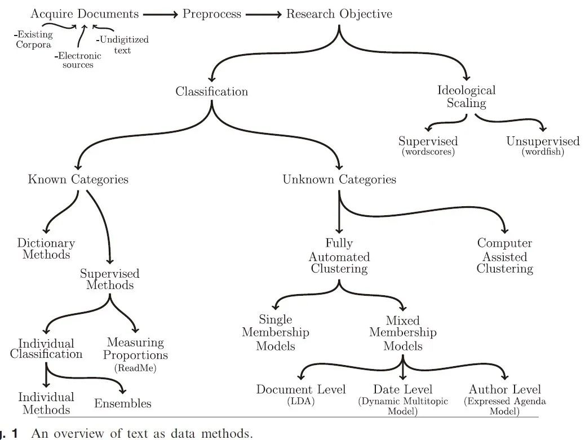
02
四大原则
本文先给出了指导自动（定量）文本分析的四大原则：
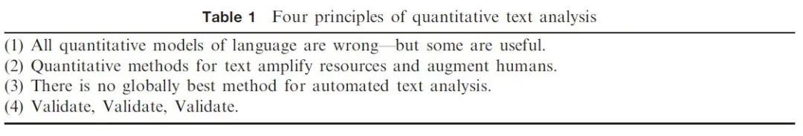
第一，所有语言的定量模型都是错的——但是一些很有用
即使对语言学家而言，文本的数据生成过程都是个谜。如果一句话有着复杂的依存结构，随着新的词语增加，它的意思将会发生很大变化。语言的复杂性导致了所有的模型都不能对文本数据生成过程给出准确解释。因此建立文本模型和政治学中更常见的进行因果推断所建立的模型的有所差别。因果推断模型的建立需要对数据生成过程有基本的了解，但是这在自动文本分析中很难做到。因此这就要求模型需要根据它在一些有用的社会科学任务上的表现来评估，比如它们是否帮助研究者将文本分入之前确定好的类别、发现文本的新的有用的分类方式等。
第二，定量方法帮助人类而非取代人类
自动文本分析方法的作用在于提高了人类的能力，而不是替代人类对文本的仔细阅读和分析思考。对文本的深入理解是社会科学家在使用文本分析时的一大优势。在文本分析时，需要将人工方法和自动方法结合。
第三，自动文本分析没有全局最优方法
不同的研究问题、不同的数据集都需要不同的方法和模型。模型之间单纯的比较没有什么意义，重要地是能找到结合不同模型的有效方法。
第四，验证、验证、验证
有时模型的结果可能是错的，这就必须进行验证。验证方式有很多，对于监督学习，学者需要说明监督学习方法能够可靠地复制人类的编码。对于无监督学习，学者需要结合实验和实质性的统计证据说明这些测度在概念上和同等的监督学习模型一样有效。
03
获取文本
由于使用电子文本数据库储存文本越来越方便，政治学家能够在各种各样的文本集上使用自动文本分析方法，这包括媒体数据、议会演讲、委员会听证、协约或政治学论文等。文本通过UTF-8、Latin character或者XML等格式储存在各类数据库中。另外，网页上的文本也随着爬虫技术的发展越来越易获得。最难获得的是储存在档案或者一些需要被扫描的书籍里的文本，但是通过一些高质量的扫描器比如Optical Character Recognition软件，也有可能将档案材料转换为计算机可读的文本。需要注意的是在一些情况下，研究者需要聚焦他们所研究的问题相关的同一类文本，自动文本分析一般对文本的长度也有一定要求。通常报纸或者政党纲领这类较长一些的文本比更短的陈述——例如对调查问卷的开放式回复更容易分析。对于较短的文本或极大规模的文本， 伴随信息(accompanying information) 对于分类或者分级模型的可靠表现十分必要。
04
降低复杂性：从词到数
语言虽然很复杂，但并不是所有的信息都对分析有帮助。本文在这部分给出了降低文本复杂度，把文本转换为定量数据的一套菜单(recipe)。在实践中，这套菜单应该根据具体问题来修正。这套菜单分析的单位是文本(text)或 文档(document) ，但对于其他单位的文本也可以适用。文本的集合被称为 语料库(corpus) 。
降低文本复杂性的关键一步是忽略词语的顺序。尽管很容易的举出改变词汇顺序改变句子意思的例子，但是在实证中这样的例子比较少。因此，我们假定文档是一个 词袋(bag of words) ，词的顺序不影响分析。词汇的一个简单的列表叫一元分词(unigram)，如果一元分词不能传达准确的含义，还可以通过二元分词或者三元分词保留某些词序。如通过二元分词“White House”将白宫和表示颜色的白房子区分开。
在丢弃了词序之后，我们通过 词干提取(stemming) 来简化词汇。词干提取通过把词汇映射到相同概念的词根从而降低了文本的维度和复杂度。比如，family, families, families’, familial都通过词干提取变成了famili。语言学中的 词干还原(Lemmatization) 与词干提取类似，但是词干还原提取的单词通常会是字典中的单词，且提取后的单词不一定会出现在原单词中（比如将better和best词干还原为good）。词干提取的优势在于计算速度比较快，且在大多数的应用中都适用。词干提取的算法有很多，其中Porter词干提取算法由于其优良的性质在词汇简化中经常使用。除了丢弃词序，我们还经常丢弃停顿、标点、字母大小写、表示语法的功能性词汇和一些非常特殊的出现很少的词汇。通常我们删除语料库中出现频率小于1%和高于99%的词汇。文本经过处理后，每个文档i(i = 1, … N)被表示为一个计算了M个唯一的词汇数量的向量Wi = (Wi1, Wi2,… WiM)。Wim表示了第m个词汇在第i个文档里面出现的次数。它们的矩阵Wi1, Wi2,… WiM叫做 文档术语矩阵(document-term matrix) 。对于一般大小的文档集合，这个矩阵大概有300-500个 特征(features) 或者叫术语(term)，并且矩阵大部分的元素将会是0(稀疏矩阵)。尽管以上的步骤导致了原来文本集很多信息被删除，但是在应用中，学者已经发现以这种方式展示文本足以推断出文本的一些有趣的特性。
除了上述方法外，在一些特殊的应用中，也有用数据表示文本的其他方法。例如，有学者在对联邦党人文集的分析中，为了推断这些文章的作者，他们只计算了停用词(stopwords)的数量，因为不同作者在使用停用词上有明显的风格差异。其他的通常使用的策略包括（1）一个词汇在文档中出现的指标而不是次数；（2）包括一些停用词，例如表示性别的代词；（3）特征的子集（通过自动特征提取或低维投影）；（4）通过词汇在文档集的稀有度进行加权（经常被称为tf- idf(term frequency–inverse document frequency)， 词频-逆文档频率加权 ）。也有学者根据不同问题设计了不同的方法。
05
文档分入已知类别
文本分类是自动文本分析方法在政治学的最常见应用。例如，研究者想知道法案是关于环境的还是其他的；地方新闻是正面的还是负面的；国际声明是挑衅的还是和平的等等。研究者的目标是推断每个文档的种类和所有文档在不同种类的分布。人工分类方法耗时耗力，但是自动文本分析可以减少人工分类的成本。本文介绍将文档分入已知类别的字典和监督学习这两种分类方法。
一、字典方法
字典方法使用 关键词在文本中出现的频率 对文本分类。例如，假设研究目的是测度报纸文章的语气（正面或负面）。字典方法使用了一个带有语气分数的词的列表和这些词出现的相对频率来测度一个文档的语气。每个单词m(m= 1, … M)都会有一个分数，最简单的情况下如果这个单词是负面语气则sm= -1，正面则s取值为1。字典方法用如下的简单加权平均方法计算出任意一个文档ti的语气，其中Ni是第i个文档的单词数量。
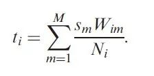 ti经常被用来作为文档语气的连续型测度，但是它也可以被用来对文档分类。比如根据它的正负将文档分为正面语气和负面语气。词典容易界定，词典分类方法简单易用且可以相互借鉴。但也要注意不同的词在不同语境下的文本表达的意思和情感可能有很大差别。另外使用词典分类方法也需要小心验证。但由于词典分类的验证方法非常少，很多基于词典的分类方法都有问题。本文认为有两种改善词典分类验证的方式。第一是分类问题需要被简化，如果学者用词典对文档进行二元划分，那么应使用作为黄金标准的人工验证方式。第二，学者们应该把词典方法的验证视为无监督学习方法的验证。
二、监督学习方法
字典方法在解决实际问题是有可能不适用，特别是当字典被应用在它本来所属的领域之外的时候。监督学习方法成为了在字典方法在某一特定的研究领域的有力补充和替代。监督学习方法易于验证。监督学习方法要求学者建立特定研究问题的清楚明确的、能够和想要分析的概念一致的 编码规则 ，找到充足的数据，建立训练集应用监督学习方法，最后验证模型的效果。手动分类的文档被用来训练监督学习模型。一般的结构是，训练集有N个文档，一共有K个分类，每个文档i的类别用Yi来表示。整个训练集被表示为Ytrain。Wtrain是特征矩阵，监督学习方法假定有一个函数f描述了词汇和类别的关系：

每种算法都估计了f。f的估计被用来推断测试集的性质：
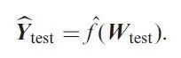
本文以朴素贝叶斯为例介绍了推断词汇和类别关系的算法。
根据贝叶斯法则，后验概率可以成比例的表示为：
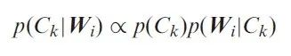
其中
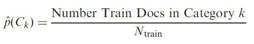
朴素贝叶斯假设给定分类，词汇相互独立，因此有下式成立：
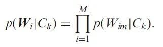
尽管这个假设很强且很有可能是错的，但是模型仍然能够利用文本足够的信息进行分类。使用这个假设，可以得到后验概率。
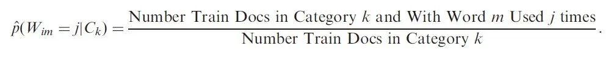
这个简单的模型问题在于有一些词汇在数据集中根本没有出现，通常的解决方法是为每一个概率加上一点点的数量，即使用贝叶斯狄利克雷多项模型(Bayesian Dirichlet-Multinomial model)。朴素贝叶斯最大化下式得到f的估计：
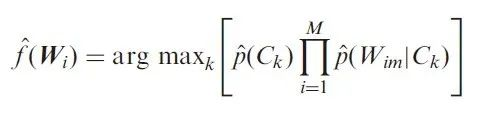
朴素贝叶斯符合上文的第一条准则。尽管特征并不是条件独立的，但是朴素贝叶斯确实被表明是一个有用的分类器。朴素贝叶斯只是文献的一小部分，其余的方法还有随机森林(Random Forest)、支持向量机(Support Vector Machines, SVM)和神经网络(neural networks)等。
除了朴素贝叶斯，本文还提出使用多模型的集成学习（Ensemble Learning）和测度比例(Measuring Proportions)提高学习的效果。
06
验证
监督模型需要验证，即比较机器编码和人类编码的结果。理想的验证将数据分为三个子集，最开始模型在训练集拟合，拟合好的模型在手动编码的文档——验证集上验证来评估模型的表现。最后的模型被用在测试集上完成分类任务。一般用机器学习常用的V折(V-fold)交叉验证来进行模型评估。
07
无监督学习
字典和监督学习假定了充分界定的种类，但是在一些情况下研究者不能事先就界定好这些种类，此时需要使用无监督学习方法来发现这些种类。无监督学习方法的价值在于可以辨别理论上非常有用的、但缺乏研究的文本的组织结构。最广泛使用的是 全自动聚类方法(Fully automated clustering, FAC) 和 计算机辅助聚类方法(Computer Assisted Clustering) 。
08
全自动聚类方法
全自动聚类方法主要介绍了两种。
第一种是单成员模型（Single membership models），单成员聚类模型估计了一个聚类，并用这个聚类近似的替代类别。模型包含了三个要素：一是文档的相似性或者距离；二是作用于一个理想聚类的目标函数；三是最优化算法。本文简要介绍了最常用的典型的 K均值聚类算法 。这一方法度量一个文档Wi与聚类中心
μk的欧式距离：
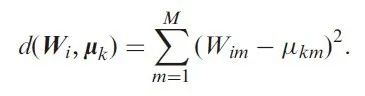
也可以使用其他的距离度量方式来计算距离，或者也可使用tf- idf对欧氏距离加权。K均值聚类的寻求每一个文档接近它的聚类中心。这可以表示为如下的目标函数，其中I为示性函数(如果Ci= k则取值为1)
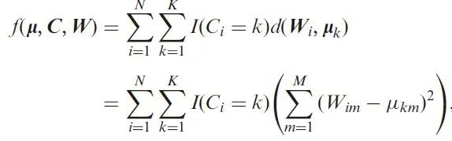
K均值聚类像其他的FAC算法一样使用了渐进和迭代最优算法。计算机领域相关文献中也有其他不同的聚类方法，且有一些使用了不同的距离度量方式、不同的目标函数、不同的最优化算法。本文不能给出一切皆准的指导，但是其他领域的各种算法在政治学领域一定要慎重使用。
第二种是 混合成员模型(mixed membership model) 。改善单成员模型输出的一种方法是包括特定问题的结构(problem- specific structure)。 主题模型(Topic models) 是其中最常用的方法。主题模型属于贝叶斯生成模型，将特定问题的结构编码为类别的估计。本文介绍了如下图所示的隐含狄利克雷分布(Latent Dirichlet Allocation，LDA)、动态多主题模型(Dynamic Multitopic Model)以及表达议题模型(Expressed Agenda Model)。其中后两个是政治学家Quinn和Grimmer等人提出的，并已经在政治学领域得到了应用，具体可以参考Quinn et al.(2010)和Grimmer(2010)。
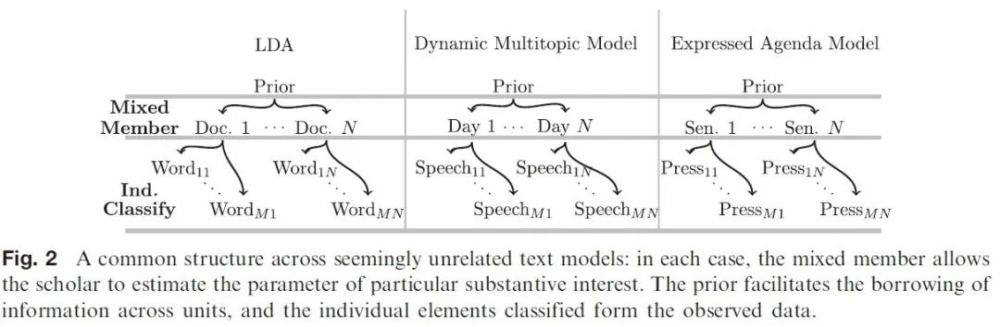
主题模型都有两个广义的特征。第一个特征这些模型定义了主题。主题被定义为在单词（words）上的概率质量函数。对于一个主题k，我们一个M×1的向量θk来表示概率分布。其中θmk表示第k个主题用第m个单词的概率。比如在国会演讲中，一个主题可能是对健康保障的辩论，那么这个主题经常使用的词很可能就有health, care, reform, insurance等。第二个特征是这些模型都如上图所示有一个层级(hierarchical)结构。本文以最广泛使用的主题模型LDA的生成过程为例解释了这两个特征。LDA属于词袋模型，该模型假定每一个文档都是主题的混合，对于每一个文档，πik表示这个文档i属于主题k的比例。我们假定i服从参数为α的狄利克雷先验：
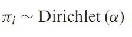
在每个文档内，单词都根据主题的分布来生成，假设一个文档有Ni个单词。LDA通过两步生成每一个单词。为了生成第i个文档的第j个单词，第一步，先生成这个单词的主题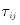 ，它服从多项分布。
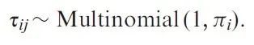
在给定主题后，单词被生成。即如果第i个文件里的第j个单词被分配到第k个主题，我们可以从它对应的主题中得到：
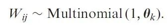
（想更深入的了解LDA模型的读者，可以参考来自靳志辉《LDA数学八卦》的下图和原文，译者注）
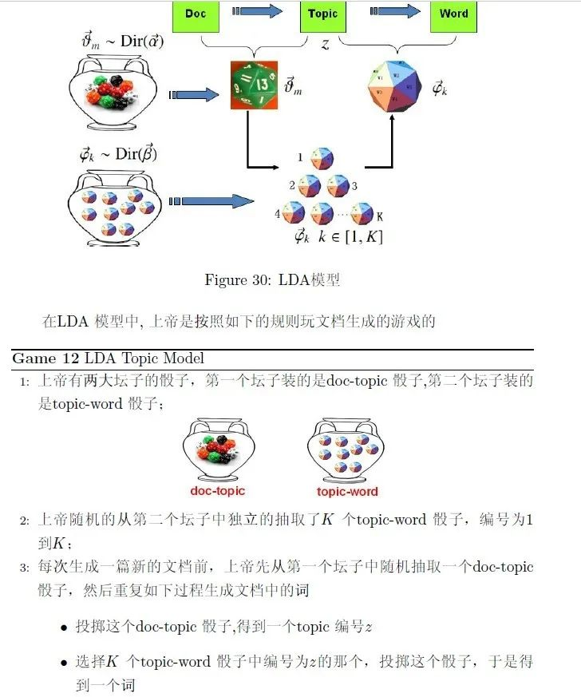
09
计算机辅助聚类方法
第二类分类方法是计算机辅助分类方法（CAC）。该方法由本文作者之一的Grimmer和哈佛大学教授加里金提出。方法的技术细节比较复杂，但思想易于理解。尽管事先确定特定数据集中的文档有效聚集的假设非常困难，但事后评价特定文本的组织（聚类）却很容易，所以可以通过 CAC在大的聚类空间上进行有效搜索进行分类 。步骤是，首先，在数据集应用各种各样的FAC方法。不同的方法会改变相似性（距离），目标函数和优化算法的定义，以提供多种方式来组织文档。然后，Grimmer and King（2011）展示了如何将分类嵌入二维空间以使得如果两个聚类以相似的方式组织文档，则两个聚类会在该空间中接近。使用这个空间，Grimmer and King（2011）提出了一种探索方法，可以轻松地搜索其中包含的方法以及数百万其他因数据相似组织的组合而产生的聚类。这些无监督方法的技术细节和验证方式可参考原文和原文引用的文献。同时本文指出，政治学界对自动文本分析中监督学习和无监督学习的优劣的争论并无必要，监督学习和无监督学习只是解决不同的问题。如果研究者事先已经有了明确的类别，那么他使用监督学习方法，而如果对文本的类别不了解，那么最好使用无监督学习。
10
在文本中测量隐含特征：对政治行为体分级
自动化内容分析方法最有前途的应用之一是在 意识形态空间中定位各种政治行为体 ，这已经在美国政治领域得到了应用。使用现有数据估算政治行为体的位置通常很困难有时甚至根本不可能。但使用文本将政治定位政治参与者的政治空间的方法有助于检验一些重要的政治理论。
本文介绍了两种使用文本对政治行为体分级(scaling)的方法。一种是Laver，Benoit和Garry（2003）的方法是一种监督方法（类似于字典方法），用于行为体使用的词汇对其定位。这篇文献介绍了类似词典方法的 wordscores 这种全自动分析方法来定位美国国会的政治行为体。第二种方法是在空间中定位行为体的无监督方法（Monroe and Maeda 2004；Slapin and Proksch 2008）。Splapin and Proksch(2008)开发了 wordfish 方法，该方法属于一种泊松-项目反应模型(Poisson- IRT model)。
本文指出，该领域不断增长的文献具有检验政治空间理论的广阔前景。最近的几篇论文为进行分级提供了重要的技术贡献和改进的方法（Martin和Vanberg 2007; Lowe 2008; Lowe et al. 2011）。这些论文很重要，但最近的论文隐含地将分类方法的目标等同于复制专家意见（Benoit，Laver and Mikhaylov 2009；Mikhaylov，Laver and Benoit 2010）或使用非文本数据进行充分验证的分类（Beauchamp 2011）。测度的可信性当然很重要，但是如果目标是复制专家意见或已经存在的分级，则没必要使用文本方法。简单地由专家推断或现有分级就足够了。
11
结论
自动文本分析方法提供了研究各种问题的工具。方法适用范围广泛，包括从对文档分类到现有的或尚待确定的类别，到在政策空间中对政治行为体分级。本文强调任何一种方法的表现都是随着不同情况而变化的。而且由于文本分析方法必然是不正确的语言模型，结果始终需要仔细验证。对于监督分类方法，需要验证机器的分类重复了手工编码。对于无监督的分类和分级方法，需要验证测度确实符合研究的概念。自动文本分析相关文献的方法远远超出了本文讨论的方法。其他领域的教科书很好地概述了本文未讨论的方法，包括自然语言处理工具。本文还建议读者阅读使用不在本文列举的方法的政治学论文深入了解（如Schrodt 2000）。本文认为接下来对自动文本分析方法研究有重要的三点：
第一， 新文本需要新方法 ：也许未来最明显的研究方向是开发新的针对文本的统计模型，这也在政治学学界内部开始进行。这些模型补充计算机科学，统计和机器学习的众多文献。确实，分析政治学中的新文本数据将有必要开发新的方法。但随着政治学方法学家开发针对特定问题的工具，他们也应该考虑方法的一般适用性。
第二， 自动文本分析方法的不确定性 ：测量自动文本分析方法的不确定性仍然是最重要的挑战之一。将文本作为数据进行定量分析的最大优势之是估计测量中不确定性的能力。目前的研究已经在测量不确定性方面有了进展，尤其是监督学习方法。如Hopkins and King（2010）展示了模拟外推（simulation- extrapolation SIMEX）如何允许编码人员分类训练文档时一定程度的不确定。同样，Benoit，Laver and Mikhaylov（2009）使用SIMEX将基于文本的分级误差纳入广义线性模型。解决不确定性可以使用更复杂的贝叶斯统计模型、为算法确定快速可靠的计算模型或方法，或者包括人类在分析时产生的不确定性。
第三， 新领域：新文本和新问题 ：除了方法论创新之外，还有很多现在可以使用自动文本分析的大量文本。这些文本包括政治理论，法律和调查研究，学者们可以从自动文本分析在他们的领域的应用中学到很多东西。政治学者当然可以用新的数据集检验长期存在的理论，但新的文本也意味着新的想法、概念和还没有被发现的过程。
本文由国政学人独家编译推荐，文章观点不代表本平台观点，转载请联系授权。


好好学习，天天“在看”